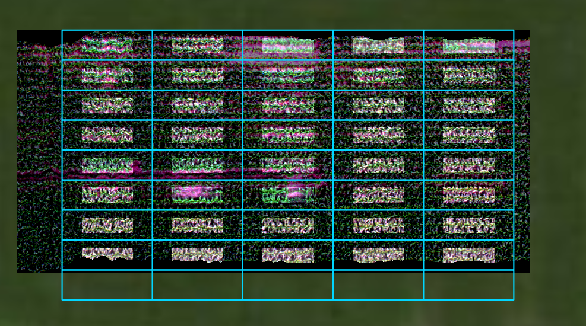
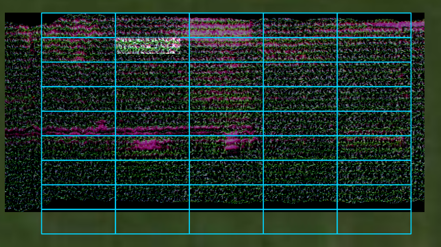

6. Tutorial: spatial_mod¶
6.1. Sample data¶
Sample imagery captured from a Resonon Pika II VIS-NIR line scanning imager and ancillary sample files can be downloaded from this link.
Before trying this tutorial on your own machine, please download the sample files and place into a local directory of your choosing (and do not change the file names). Indicate the location of your sample files by modifying data_dir:
[1]:
data_dir = r'F:\\nigo0024\Documents\hs_process_demo'
6.2. Confirm your environment¶
Before trying the tutorials, be sure hs_process and its dependencies are properly installed. If you installed in a virtual environment, first check we are indeed using the Python instance that was installed with the virtual environment:
[2]:
import sys
print('Python install location: {0}'.format(sys.executable))
Python install location: C:\Users\nigo0024\AppData\Local\Continuum\anaconda3\envs\spec\python.exe
The spec folder that contains python.exe tells me that the activated Python instance is indeed in the spec environment, just as I intend. If you created a virtual environment, but your python.exe is not in the envs\spec directory, you either did not properly create your virtual environment or you are not pointing to the correct Python installation in your IDE (e.g., Spyder, Jupyter notebook, etc.).
6.3. spatial_mod.crop_many_gdf¶
Crops many plots from a single image by comparing the image to a polygon file (geopandas.GoeDataFrame) that contains plot information and geometry of plot boundaries. [API]
Load the geopandas, hsio and spatial_mod modules
[3]:
import geopandas as gpd
import os
from hs_process import hsio
from hs_process import spatial_mod
Read datacube and spatial plot boundaries (refer to the API for more information about the parameter meanings and options).
[4]:
fname_in = os.path.join(data_dir, 'Wells_rep2_20180628_16h56m_pika_gige_7-Radiance Conversion-Georectify Airborne Datacube-Convert Radiance Cube to Reflectance from Measured Reference Spectrum.bip.hdr')
fname_gdf = os.path.join(data_dir, 'plot_bounds.geojson')
gdf = gpd.read_file(fname_gdf)
io = hsio(fname_in)
my_spatial_mod = spatial_mod(io.spyfile)
dir_out = os.path.join(io.base_dir, 'spatial_mod', 'crop_many_gdf')
if not os.path.isdir(os.path.join(io.base_dir, 'spatial_mod')): # create a new folder named "spatial_mod" if it does not exist
os.mkdir(os.path.join(io.base_dir, 'spatial_mod'))
if not os.path.isdir(dir_out): # create a new folder named "crop_many_gdf" if it does not exist
os.mkdir(dir_out)
name_append = '-crop-many-gdf'
Get instructions on how plots should be cropped via spatial_mod.crop_many_gdf; note that a pandas.DataFrame is returned with information describing how each plot should be cropped.
[5]:
df_plots = my_spatial_mod.crop_many_gdf(spyfile=io.spyfile, gdf=gdf)
df_plots
[5]:
| directory | name_short | name_long | ext | plot_id | pix_e_ul | pix_n_ul | crop_e_pix | crop_n_pix | |
|---|---|---|---|---|---|---|---|---|---|
| 0 | F:\\nigo0024\Documents\hs_process_demo | Wells_rep2_20180628_16h56m_pika_gige_7 | -Radiance Conversion-Georectify Airborne Datac... | .bip | 1018 | 113 | 0 | 229 | 75 |
| 1 | F:\\nigo0024\Documents\hs_process_demo | Wells_rep2_20180628_16h56m_pika_gige_7 | -Radiance Conversion-Georectify Airborne Datac... | .bip | 918 | 342 | 0 | 229 | 75 |
| 2 | F:\\nigo0024\Documents\hs_process_demo | Wells_rep2_20180628_16h56m_pika_gige_7 | -Radiance Conversion-Georectify Airborne Datac... | .bip | 818 | 571 | 0 | 229 | 75 |
| 3 | F:\\nigo0024\Documents\hs_process_demo | Wells_rep2_20180628_16h56m_pika_gige_7 | -Radiance Conversion-Georectify Airborne Datac... | .bip | 718 | 800 | 0 | 229 | 75 |
| 4 | F:\\nigo0024\Documents\hs_process_demo | Wells_rep2_20180628_16h56m_pika_gige_7 | -Radiance Conversion-Georectify Airborne Datac... | .bip | 618 | 1029 | 0 | 229 | 75 |
| 5 | F:\\nigo0024\Documents\hs_process_demo | Wells_rep2_20180628_16h56m_pika_gige_7 | -Radiance Conversion-Georectify Airborne Datac... | .bip | 1017 | 113 | 75 | 229 | 76 |
| 6 | F:\\nigo0024\Documents\hs_process_demo | Wells_rep2_20180628_16h56m_pika_gige_7 | -Radiance Conversion-Georectify Airborne Datac... | .bip | 917 | 342 | 75 | 229 | 76 |
| 7 | F:\\nigo0024\Documents\hs_process_demo | Wells_rep2_20180628_16h56m_pika_gige_7 | -Radiance Conversion-Georectify Airborne Datac... | .bip | 817 | 571 | 75 | 229 | 76 |
| 8 | F:\\nigo0024\Documents\hs_process_demo | Wells_rep2_20180628_16h56m_pika_gige_7 | -Radiance Conversion-Georectify Airborne Datac... | .bip | 717 | 800 | 75 | 229 | 76 |
| 9 | F:\\nigo0024\Documents\hs_process_demo | Wells_rep2_20180628_16h56m_pika_gige_7 | -Radiance Conversion-Georectify Airborne Datac... | .bip | 617 | 1029 | 75 | 229 | 76 |
| 10 | F:\\nigo0024\Documents\hs_process_demo | Wells_rep2_20180628_16h56m_pika_gige_7 | -Radiance Conversion-Georectify Airborne Datac... | .bip | 1016 | 113 | 152 | 229 | 76 |
| 11 | F:\\nigo0024\Documents\hs_process_demo | Wells_rep2_20180628_16h56m_pika_gige_7 | -Radiance Conversion-Georectify Airborne Datac... | .bip | 916 | 342 | 152 | 229 | 76 |
| 12 | F:\\nigo0024\Documents\hs_process_demo | Wells_rep2_20180628_16h56m_pika_gige_7 | -Radiance Conversion-Georectify Airborne Datac... | .bip | 816 | 571 | 152 | 229 | 76 |
| 13 | F:\\nigo0024\Documents\hs_process_demo | Wells_rep2_20180628_16h56m_pika_gige_7 | -Radiance Conversion-Georectify Airborne Datac... | .bip | 716 | 800 | 152 | 229 | 76 |
| 14 | F:\\nigo0024\Documents\hs_process_demo | Wells_rep2_20180628_16h56m_pika_gige_7 | -Radiance Conversion-Georectify Airborne Datac... | .bip | 616 | 1029 | 152 | 229 | 76 |
| 15 | F:\\nigo0024\Documents\hs_process_demo | Wells_rep2_20180628_16h56m_pika_gige_7 | -Radiance Conversion-Georectify Airborne Datac... | .bip | 1015 | 113 | 228 | 229 | 76 |
| 16 | F:\\nigo0024\Documents\hs_process_demo | Wells_rep2_20180628_16h56m_pika_gige_7 | -Radiance Conversion-Georectify Airborne Datac... | .bip | 915 | 342 | 228 | 229 | 76 |
| 17 | F:\\nigo0024\Documents\hs_process_demo | Wells_rep2_20180628_16h56m_pika_gige_7 | -Radiance Conversion-Georectify Airborne Datac... | .bip | 815 | 571 | 228 | 229 | 76 |
| 18 | F:\\nigo0024\Documents\hs_process_demo | Wells_rep2_20180628_16h56m_pika_gige_7 | -Radiance Conversion-Georectify Airborne Datac... | .bip | 715 | 800 | 228 | 229 | 76 |
| 19 | F:\\nigo0024\Documents\hs_process_demo | Wells_rep2_20180628_16h56m_pika_gige_7 | -Radiance Conversion-Georectify Airborne Datac... | .bip | 615 | 1029 | 228 | 229 | 76 |
| 20 | F:\\nigo0024\Documents\hs_process_demo | Wells_rep2_20180628_16h56m_pika_gige_7 | -Radiance Conversion-Georectify Airborne Datac... | .bip | 1014 | 113 | 304 | 229 | 76 |
| 21 | F:\\nigo0024\Documents\hs_process_demo | Wells_rep2_20180628_16h56m_pika_gige_7 | -Radiance Conversion-Georectify Airborne Datac... | .bip | 914 | 342 | 304 | 229 | 76 |
| 22 | F:\\nigo0024\Documents\hs_process_demo | Wells_rep2_20180628_16h56m_pika_gige_7 | -Radiance Conversion-Georectify Airborne Datac... | .bip | 814 | 571 | 304 | 229 | 76 |
| 23 | F:\\nigo0024\Documents\hs_process_demo | Wells_rep2_20180628_16h56m_pika_gige_7 | -Radiance Conversion-Georectify Airborne Datac... | .bip | 714 | 800 | 304 | 229 | 76 |
| 24 | F:\\nigo0024\Documents\hs_process_demo | Wells_rep2_20180628_16h56m_pika_gige_7 | -Radiance Conversion-Georectify Airborne Datac... | .bip | 614 | 1029 | 304 | 229 | 76 |
| 25 | F:\\nigo0024\Documents\hs_process_demo | Wells_rep2_20180628_16h56m_pika_gige_7 | -Radiance Conversion-Georectify Airborne Datac... | .bip | 1013 | 113 | 380 | 229 | 76 |
| 26 | F:\\nigo0024\Documents\hs_process_demo | Wells_rep2_20180628_16h56m_pika_gige_7 | -Radiance Conversion-Georectify Airborne Datac... | .bip | 913 | 342 | 380 | 229 | 76 |
| 27 | F:\\nigo0024\Documents\hs_process_demo | Wells_rep2_20180628_16h56m_pika_gige_7 | -Radiance Conversion-Georectify Airborne Datac... | .bip | 813 | 571 | 380 | 229 | 76 |
| 28 | F:\\nigo0024\Documents\hs_process_demo | Wells_rep2_20180628_16h56m_pika_gige_7 | -Radiance Conversion-Georectify Airborne Datac... | .bip | 713 | 800 | 380 | 229 | 76 |
| 29 | F:\\nigo0024\Documents\hs_process_demo | Wells_rep2_20180628_16h56m_pika_gige_7 | -Radiance Conversion-Georectify Airborne Datac... | .bip | 613 | 1029 | 380 | 229 | 76 |
| 30 | F:\\nigo0024\Documents\hs_process_demo | Wells_rep2_20180628_16h56m_pika_gige_7 | -Radiance Conversion-Georectify Airborne Datac... | .bip | 1012 | 113 | 456 | 229 | 76 |
| 31 | F:\\nigo0024\Documents\hs_process_demo | Wells_rep2_20180628_16h56m_pika_gige_7 | -Radiance Conversion-Georectify Airborne Datac... | .bip | 912 | 342 | 456 | 229 | 76 |
| 32 | F:\\nigo0024\Documents\hs_process_demo | Wells_rep2_20180628_16h56m_pika_gige_7 | -Radiance Conversion-Georectify Airborne Datac... | .bip | 812 | 571 | 456 | 229 | 76 |
| 33 | F:\\nigo0024\Documents\hs_process_demo | Wells_rep2_20180628_16h56m_pika_gige_7 | -Radiance Conversion-Georectify Airborne Datac... | .bip | 712 | 800 | 456 | 229 | 76 |
| 34 | F:\\nigo0024\Documents\hs_process_demo | Wells_rep2_20180628_16h56m_pika_gige_7 | -Radiance Conversion-Georectify Airborne Datac... | .bip | 612 | 1029 | 456 | 229 | 76 |
| 35 | F:\\nigo0024\Documents\hs_process_demo | Wells_rep2_20180628_16h56m_pika_gige_7 | -Radiance Conversion-Georectify Airborne Datac... | .bip | 1011 | 113 | 533 | 229 | 76 |
| 36 | F:\\nigo0024\Documents\hs_process_demo | Wells_rep2_20180628_16h56m_pika_gige_7 | -Radiance Conversion-Georectify Airborne Datac... | .bip | 911 | 342 | 533 | 229 | 76 |
| 37 | F:\\nigo0024\Documents\hs_process_demo | Wells_rep2_20180628_16h56m_pika_gige_7 | -Radiance Conversion-Georectify Airborne Datac... | .bip | 811 | 571 | 533 | 229 | 76 |
| 38 | F:\\nigo0024\Documents\hs_process_demo | Wells_rep2_20180628_16h56m_pika_gige_7 | -Radiance Conversion-Georectify Airborne Datac... | .bip | 711 | 800 | 533 | 229 | 76 |
| 39 | F:\\nigo0024\Documents\hs_process_demo | Wells_rep2_20180628_16h56m_pika_gige_7 | -Radiance Conversion-Georectify Airborne Datac... | .bip | 611 | 1029 | 533 | 229 | 76 |
| 40 | F:\\nigo0024\Documents\hs_process_demo | Wells_rep2_20180628_16h56m_pika_gige_7 | -Radiance Conversion-Georectify Airborne Datac... | .bip | 1010 | 113 | 609 | 229 | 7 |
| 41 | F:\\nigo0024\Documents\hs_process_demo | Wells_rep2_20180628_16h56m_pika_gige_7 | -Radiance Conversion-Georectify Airborne Datac... | .bip | 910 | 342 | 609 | 229 | 7 |
| 42 | F:\\nigo0024\Documents\hs_process_demo | Wells_rep2_20180628_16h56m_pika_gige_7 | -Radiance Conversion-Georectify Airborne Datac... | .bip | 810 | 571 | 609 | 229 | 7 |
| 43 | F:\\nigo0024\Documents\hs_process_demo | Wells_rep2_20180628_16h56m_pika_gige_7 | -Radiance Conversion-Georectify Airborne Datac... | .bip | 710 | 800 | 609 | 229 | 7 |
| 44 | F:\\nigo0024\Documents\hs_process_demo | Wells_rep2_20180628_16h56m_pika_gige_7 | -Radiance Conversion-Georectify Airborne Datac... | .bip | 610 | 1029 | 609 | 229 | 7 |
Use the data from the first frow of df_plots to crop a single plot from the original image (uses spatial_mod.crop_single)
[6]:
pix_e_ul=113
pix_n_ul=0
crop_e_pix=229
crop_n_pix=75
plot_id=1018
array_crop, metadata = my_spatial_mod.crop_single(
pix_e_ul=pix_e_ul, pix_n_ul=pix_n_ul, crop_e_pix=crop_e_pix, crop_n_pix=crop_n_pix,
spyfile=io.spyfile, plot_id=plot_id)
Save the cropped datacube and geotiff to a new directory
[7]:
fname_out = os.path.join(dir_out, io.name_short + '_plot_' + str(1018) + name_append + '.' + io.defaults.envi_write.interleave)
fname_out_tif = os.path.join(dir_out, io.name_short + '_plot_' + str(1018) + '.tif')
io.write_cube(fname_out, array_crop, metadata=metadata)
io.write_tif(fname_out_tif, spyfile=array_crop, metadata=metadata)
Saving F:\nigo0024\Documents\hs_process_demo\spatial_mod\crop_many_gdf\Wells_rep2_20180628_16h56m_pika_gige_7_plot_1018-crop-many-gdf.bip
Either `projection_out` is `None` or `geotransform_out` is `None` (or both are). Retrieving projection and geotransform information by loading `hsio.fname_in` via GDAL. Be sure this is appropriate for the data you are trying to write.
Using a for loop, use spatial_mod.crop_single and hsio.write_cube to crop by plot and save cropped datacubes and geotiffs to file
[8]:
for idx, row in df_plots.iterrows():
io.read_cube(fname_in, name_long=io.name_long,
name_plot=row['plot_id'],
name_short=io.name_short)
my_spatial_mod.load_spyfile(io.spyfile)
array_crop, metadata = my_spatial_mod.crop_single(
pix_e_ul=row['pix_e_ul'], pix_n_ul=row['pix_n_ul'],
crop_e_pix=row['crop_e_pix'], crop_n_pix=row['crop_n_pix'],
buf_e_m=2.0, buf_n_m=0.75,
plot_id=row['plot_id'])
fname_out = os.path.join(dir_out, io.name_short + '_plot_' + str(row['plot_id']) + name_append + '.bip.hdr')
fname_out_tif = os.path.join(dir_out, io.name_short + '_plot_' + str(row['plot_id']) + '.tif')
io.write_cube(fname_out, array_crop, metadata=metadata, force=True) # force=True to overwrite the plot_1018 image
io.write_tif(fname_out_tif, spyfile=array_crop, metadata=metadata)
Saving F:\nigo0024\Documents\hs_process_demo\spatial_mod\crop_many_gdf\Wells_rep2_20180628_16h56m_pika_gige_7_plot_1018-crop-many-gdf.bip
Either `projection_out` is `None` or `geotransform_out` is `None` (or both are). Retrieving projection and geotransform information by loading `hsio.fname_in` via GDAL. Be sure this is appropriate for the data you are trying to write.
Saving F:\nigo0024\Documents\hs_process_demo\spatial_mod\crop_many_gdf\Wells_rep2_20180628_16h56m_pika_gige_7_plot_918-crop-many-gdf.bip
Either `projection_out` is `None` or `geotransform_out` is `None` (or both are). Retrieving projection and geotransform information by loading `hsio.fname_in` via GDAL. Be sure this is appropriate for the data you are trying to write.
Saving F:\nigo0024\Documents\hs_process_demo\spatial_mod\crop_many_gdf\Wells_rep2_20180628_16h56m_pika_gige_7_plot_818-crop-many-gdf.bip
Either `projection_out` is `None` or `geotransform_out` is `None` (or both are). Retrieving projection and geotransform information by loading `hsio.fname_in` via GDAL. Be sure this is appropriate for the data you are trying to write.
Saving F:\nigo0024\Documents\hs_process_demo\spatial_mod\crop_many_gdf\Wells_rep2_20180628_16h56m_pika_gige_7_plot_718-crop-many-gdf.bip
Either `projection_out` is `None` or `geotransform_out` is `None` (or both are). Retrieving projection and geotransform information by loading `hsio.fname_in` via GDAL. Be sure this is appropriate for the data you are trying to write.
Saving F:\nigo0024\Documents\hs_process_demo\spatial_mod\crop_many_gdf\Wells_rep2_20180628_16h56m_pika_gige_7_plot_618-crop-many-gdf.bip
Either `projection_out` is `None` or `geotransform_out` is `None` (or both are). Retrieving projection and geotransform information by loading `hsio.fname_in` via GDAL. Be sure this is appropriate for the data you are trying to write.
Saving F:\nigo0024\Documents\hs_process_demo\spatial_mod\crop_many_gdf\Wells_rep2_20180628_16h56m_pika_gige_7_plot_1017-crop-many-gdf.bip
Either `projection_out` is `None` or `geotransform_out` is `None` (or both are). Retrieving projection and geotransform information by loading `hsio.fname_in` via GDAL. Be sure this is appropriate for the data you are trying to write.
Saving F:\nigo0024\Documents\hs_process_demo\spatial_mod\crop_many_gdf\Wells_rep2_20180628_16h56m_pika_gige_7_plot_917-crop-many-gdf.bip
Either `projection_out` is `None` or `geotransform_out` is `None` (or both are). Retrieving projection and geotransform information by loading `hsio.fname_in` via GDAL. Be sure this is appropriate for the data you are trying to write.
C:\Users\nigo0024\AppData\Local\Continuum\anaconda3\envs\spec\lib\site-packages\hs_process\utilities.py:1041: MatplotlibDeprecationWarning: Adding an axes using the same arguments as a previous axes currently reuses the earlier instance. In a future version, a new instance will always be created and returned. Meanwhile, this warning can be suppressed, and the future behavior ensured, by passing a unique label to each axes instance.
ax = plt.subplot()
C:\Users\nigo0024\AppData\Local\Continuum\anaconda3\envs\spec\lib\site-packages\hs_process\utilities.py:1041: MatplotlibDeprecationWarning: Adding an axes using the same arguments as a previous axes currently reuses the earlier instance. In a future version, a new instance will always be created and returned. Meanwhile, this warning can be suppressed, and the future behavior ensured, by passing a unique label to each axes instance.
ax = plt.subplot()
C:\Users\nigo0024\AppData\Local\Continuum\anaconda3\envs\spec\lib\site-packages\hs_process\utilities.py:1041: MatplotlibDeprecationWarning: Adding an axes using the same arguments as a previous axes currently reuses the earlier instance. In a future version, a new instance will always be created and returned. Meanwhile, this warning can be suppressed, and the future behavior ensured, by passing a unique label to each axes instance.
ax = plt.subplot()
C:\Users\nigo0024\AppData\Local\Continuum\anaconda3\envs\spec\lib\site-packages\hs_process\utilities.py:1041: MatplotlibDeprecationWarning: Adding an axes using the same arguments as a previous axes currently reuses the earlier instance. In a future version, a new instance will always be created and returned. Meanwhile, this warning can be suppressed, and the future behavior ensured, by passing a unique label to each axes instance.
ax = plt.subplot()
C:\Users\nigo0024\AppData\Local\Continuum\anaconda3\envs\spec\lib\site-packages\hs_process\utilities.py:1041: MatplotlibDeprecationWarning: Adding an axes using the same arguments as a previous axes currently reuses the earlier instance. In a future version, a new instance will always be created and returned. Meanwhile, this warning can be suppressed, and the future behavior ensured, by passing a unique label to each axes instance.
ax = plt.subplot()
C:\Users\nigo0024\AppData\Local\Continuum\anaconda3\envs\spec\lib\site-packages\hs_process\utilities.py:1041: MatplotlibDeprecationWarning: Adding an axes using the same arguments as a previous axes currently reuses the earlier instance. In a future version, a new instance will always be created and returned. Meanwhile, this warning can be suppressed, and the future behavior ensured, by passing a unique label to each axes instance.
ax = plt.subplot()
Saving F:\nigo0024\Documents\hs_process_demo\spatial_mod\crop_many_gdf\Wells_rep2_20180628_16h56m_pika_gige_7_plot_817-crop-many-gdf.bip
Either `projection_out` is `None` or `geotransform_out` is `None` (or both are). Retrieving projection and geotransform information by loading `hsio.fname_in` via GDAL. Be sure this is appropriate for the data you are trying to write.
Saving F:\nigo0024\Documents\hs_process_demo\spatial_mod\crop_many_gdf\Wells_rep2_20180628_16h56m_pika_gige_7_plot_717-crop-many-gdf.bip
Either `projection_out` is `None` or `geotransform_out` is `None` (or both are). Retrieving projection and geotransform information by loading `hsio.fname_in` via GDAL. Be sure this is appropriate for the data you are trying to write.
Saving F:\nigo0024\Documents\hs_process_demo\spatial_mod\crop_many_gdf\Wells_rep2_20180628_16h56m_pika_gige_7_plot_617-crop-many-gdf.bip
Either `projection_out` is `None` or `geotransform_out` is `None` (or both are). Retrieving projection and geotransform information by loading `hsio.fname_in` via GDAL. Be sure this is appropriate for the data you are trying to write.
Saving F:\nigo0024\Documents\hs_process_demo\spatial_mod\crop_many_gdf\Wells_rep2_20180628_16h56m_pika_gige_7_plot_1016-crop-many-gdf.bip
Either `projection_out` is `None` or `geotransform_out` is `None` (or both are). Retrieving projection and geotransform information by loading `hsio.fname_in` via GDAL. Be sure this is appropriate for the data you are trying to write.
Saving F:\nigo0024\Documents\hs_process_demo\spatial_mod\crop_many_gdf\Wells_rep2_20180628_16h56m_pika_gige_7_plot_916-crop-many-gdf.bip
Either `projection_out` is `None` or `geotransform_out` is `None` (or both are). Retrieving projection and geotransform information by loading `hsio.fname_in` via GDAL. Be sure this is appropriate for the data you are trying to write.
C:\Users\nigo0024\AppData\Local\Continuum\anaconda3\envs\spec\lib\site-packages\hs_process\utilities.py:1041: MatplotlibDeprecationWarning: Adding an axes using the same arguments as a previous axes currently reuses the earlier instance. In a future version, a new instance will always be created and returned. Meanwhile, this warning can be suppressed, and the future behavior ensured, by passing a unique label to each axes instance.
ax = plt.subplot()
C:\Users\nigo0024\AppData\Local\Continuum\anaconda3\envs\spec\lib\site-packages\hs_process\utilities.py:1041: MatplotlibDeprecationWarning: Adding an axes using the same arguments as a previous axes currently reuses the earlier instance. In a future version, a new instance will always be created and returned. Meanwhile, this warning can be suppressed, and the future behavior ensured, by passing a unique label to each axes instance.
ax = plt.subplot()
C:\Users\nigo0024\AppData\Local\Continuum\anaconda3\envs\spec\lib\site-packages\hs_process\utilities.py:1041: MatplotlibDeprecationWarning: Adding an axes using the same arguments as a previous axes currently reuses the earlier instance. In a future version, a new instance will always be created and returned. Meanwhile, this warning can be suppressed, and the future behavior ensured, by passing a unique label to each axes instance.
ax = plt.subplot()
C:\Users\nigo0024\AppData\Local\Continuum\anaconda3\envs\spec\lib\site-packages\hs_process\utilities.py:1041: MatplotlibDeprecationWarning: Adding an axes using the same arguments as a previous axes currently reuses the earlier instance. In a future version, a new instance will always be created and returned. Meanwhile, this warning can be suppressed, and the future behavior ensured, by passing a unique label to each axes instance.
ax = plt.subplot()
C:\Users\nigo0024\AppData\Local\Continuum\anaconda3\envs\spec\lib\site-packages\hs_process\utilities.py:1041: MatplotlibDeprecationWarning: Adding an axes using the same arguments as a previous axes currently reuses the earlier instance. In a future version, a new instance will always be created and returned. Meanwhile, this warning can be suppressed, and the future behavior ensured, by passing a unique label to each axes instance.
ax = plt.subplot()
Saving F:\nigo0024\Documents\hs_process_demo\spatial_mod\crop_many_gdf\Wells_rep2_20180628_16h56m_pika_gige_7_plot_816-crop-many-gdf.bip
Either `projection_out` is `None` or `geotransform_out` is `None` (or both are). Retrieving projection and geotransform information by loading `hsio.fname_in` via GDAL. Be sure this is appropriate for the data you are trying to write.
Saving F:\nigo0024\Documents\hs_process_demo\spatial_mod\crop_many_gdf\Wells_rep2_20180628_16h56m_pika_gige_7_plot_716-crop-many-gdf.bip
Either `projection_out` is `None` or `geotransform_out` is `None` (or both are). Retrieving projection and geotransform information by loading `hsio.fname_in` via GDAL. Be sure this is appropriate for the data you are trying to write.
Saving F:\nigo0024\Documents\hs_process_demo\spatial_mod\crop_many_gdf\Wells_rep2_20180628_16h56m_pika_gige_7_plot_616-crop-many-gdf.bip
Either `projection_out` is `None` or `geotransform_out` is `None` (or both are). Retrieving projection and geotransform information by loading `hsio.fname_in` via GDAL. Be sure this is appropriate for the data you are trying to write.
Saving F:\nigo0024\Documents\hs_process_demo\spatial_mod\crop_many_gdf\Wells_rep2_20180628_16h56m_pika_gige_7_plot_1015-crop-many-gdf.bip
Either `projection_out` is `None` or `geotransform_out` is `None` (or both are). Retrieving projection and geotransform information by loading `hsio.fname_in` via GDAL. Be sure this is appropriate for the data you are trying to write.
Saving F:\nigo0024\Documents\hs_process_demo\spatial_mod\crop_many_gdf\Wells_rep2_20180628_16h56m_pika_gige_7_plot_915-crop-many-gdf.bip
Either `projection_out` is `None` or `geotransform_out` is `None` (or both are). Retrieving projection and geotransform information by loading `hsio.fname_in` via GDAL. Be sure this is appropriate for the data you are trying to write.
C:\Users\nigo0024\AppData\Local\Continuum\anaconda3\envs\spec\lib\site-packages\hs_process\utilities.py:1041: MatplotlibDeprecationWarning: Adding an axes using the same arguments as a previous axes currently reuses the earlier instance. In a future version, a new instance will always be created and returned. Meanwhile, this warning can be suppressed, and the future behavior ensured, by passing a unique label to each axes instance.
ax = plt.subplot()
C:\Users\nigo0024\AppData\Local\Continuum\anaconda3\envs\spec\lib\site-packages\hs_process\utilities.py:1041: MatplotlibDeprecationWarning: Adding an axes using the same arguments as a previous axes currently reuses the earlier instance. In a future version, a new instance will always be created and returned. Meanwhile, this warning can be suppressed, and the future behavior ensured, by passing a unique label to each axes instance.
ax = plt.subplot()
C:\Users\nigo0024\AppData\Local\Continuum\anaconda3\envs\spec\lib\site-packages\hs_process\utilities.py:1041: MatplotlibDeprecationWarning: Adding an axes using the same arguments as a previous axes currently reuses the earlier instance. In a future version, a new instance will always be created and returned. Meanwhile, this warning can be suppressed, and the future behavior ensured, by passing a unique label to each axes instance.
ax = plt.subplot()
C:\Users\nigo0024\AppData\Local\Continuum\anaconda3\envs\spec\lib\site-packages\hs_process\utilities.py:1041: MatplotlibDeprecationWarning: Adding an axes using the same arguments as a previous axes currently reuses the earlier instance. In a future version, a new instance will always be created and returned. Meanwhile, this warning can be suppressed, and the future behavior ensured, by passing a unique label to each axes instance.
ax = plt.subplot()
C:\Users\nigo0024\AppData\Local\Continuum\anaconda3\envs\spec\lib\site-packages\hs_process\utilities.py:1041: MatplotlibDeprecationWarning: Adding an axes using the same arguments as a previous axes currently reuses the earlier instance. In a future version, a new instance will always be created and returned. Meanwhile, this warning can be suppressed, and the future behavior ensured, by passing a unique label to each axes instance.
ax = plt.subplot()
C:\Users\nigo0024\AppData\Local\Continuum\anaconda3\envs\spec\lib\site-packages\hs_process\utilities.py:1041: MatplotlibDeprecationWarning: Adding an axes using the same arguments as a previous axes currently reuses the earlier instance. In a future version, a new instance will always be created and returned. Meanwhile, this warning can be suppressed, and the future behavior ensured, by passing a unique label to each axes instance.
ax = plt.subplot()
Saving F:\nigo0024\Documents\hs_process_demo\spatial_mod\crop_many_gdf\Wells_rep2_20180628_16h56m_pika_gige_7_plot_815-crop-many-gdf.bip
Either `projection_out` is `None` or `geotransform_out` is `None` (or both are). Retrieving projection and geotransform information by loading `hsio.fname_in` via GDAL. Be sure this is appropriate for the data you are trying to write.
Saving F:\nigo0024\Documents\hs_process_demo\spatial_mod\crop_many_gdf\Wells_rep2_20180628_16h56m_pika_gige_7_plot_715-crop-many-gdf.bip
Either `projection_out` is `None` or `geotransform_out` is `None` (or both are). Retrieving projection and geotransform information by loading `hsio.fname_in` via GDAL. Be sure this is appropriate for the data you are trying to write.
Saving F:\nigo0024\Documents\hs_process_demo\spatial_mod\crop_many_gdf\Wells_rep2_20180628_16h56m_pika_gige_7_plot_615-crop-many-gdf.bip
Either `projection_out` is `None` or `geotransform_out` is `None` (or both are). Retrieving projection and geotransform information by loading `hsio.fname_in` via GDAL. Be sure this is appropriate for the data you are trying to write.
Saving F:\nigo0024\Documents\hs_process_demo\spatial_mod\crop_many_gdf\Wells_rep2_20180628_16h56m_pika_gige_7_plot_1014-crop-many-gdf.bip
Either `projection_out` is `None` or `geotransform_out` is `None` (or both are). Retrieving projection and geotransform information by loading `hsio.fname_in` via GDAL. Be sure this is appropriate for the data you are trying to write.
Saving F:\nigo0024\Documents\hs_process_demo\spatial_mod\crop_many_gdf\Wells_rep2_20180628_16h56m_pika_gige_7_plot_914-crop-many-gdf.bip
Either `projection_out` is `None` or `geotransform_out` is `None` (or both are). Retrieving projection and geotransform information by loading `hsio.fname_in` via GDAL. Be sure this is appropriate for the data you are trying to write.
C:\Users\nigo0024\AppData\Local\Continuum\anaconda3\envs\spec\lib\site-packages\hs_process\utilities.py:1041: MatplotlibDeprecationWarning: Adding an axes using the same arguments as a previous axes currently reuses the earlier instance. In a future version, a new instance will always be created and returned. Meanwhile, this warning can be suppressed, and the future behavior ensured, by passing a unique label to each axes instance.
ax = plt.subplot()
C:\Users\nigo0024\AppData\Local\Continuum\anaconda3\envs\spec\lib\site-packages\hs_process\utilities.py:1041: MatplotlibDeprecationWarning: Adding an axes using the same arguments as a previous axes currently reuses the earlier instance. In a future version, a new instance will always be created and returned. Meanwhile, this warning can be suppressed, and the future behavior ensured, by passing a unique label to each axes instance.
ax = plt.subplot()
C:\Users\nigo0024\AppData\Local\Continuum\anaconda3\envs\spec\lib\site-packages\hs_process\utilities.py:1041: MatplotlibDeprecationWarning: Adding an axes using the same arguments as a previous axes currently reuses the earlier instance. In a future version, a new instance will always be created and returned. Meanwhile, this warning can be suppressed, and the future behavior ensured, by passing a unique label to each axes instance.
ax = plt.subplot()
C:\Users\nigo0024\AppData\Local\Continuum\anaconda3\envs\spec\lib\site-packages\hs_process\utilities.py:1041: MatplotlibDeprecationWarning: Adding an axes using the same arguments as a previous axes currently reuses the earlier instance. In a future version, a new instance will always be created and returned. Meanwhile, this warning can be suppressed, and the future behavior ensured, by passing a unique label to each axes instance.
ax = plt.subplot()
C:\Users\nigo0024\AppData\Local\Continuum\anaconda3\envs\spec\lib\site-packages\hs_process\utilities.py:1041: MatplotlibDeprecationWarning: Adding an axes using the same arguments as a previous axes currently reuses the earlier instance. In a future version, a new instance will always be created and returned. Meanwhile, this warning can be suppressed, and the future behavior ensured, by passing a unique label to each axes instance.
ax = plt.subplot()
C:\Users\nigo0024\AppData\Local\Continuum\anaconda3\envs\spec\lib\site-packages\hs_process\utilities.py:1041: MatplotlibDeprecationWarning: Adding an axes using the same arguments as a previous axes currently reuses the earlier instance. In a future version, a new instance will always be created and returned. Meanwhile, this warning can be suppressed, and the future behavior ensured, by passing a unique label to each axes instance.
ax = plt.subplot()
Saving F:\nigo0024\Documents\hs_process_demo\spatial_mod\crop_many_gdf\Wells_rep2_20180628_16h56m_pika_gige_7_plot_814-crop-many-gdf.bip
Either `projection_out` is `None` or `geotransform_out` is `None` (or both are). Retrieving projection and geotransform information by loading `hsio.fname_in` via GDAL. Be sure this is appropriate for the data you are trying to write.
Saving F:\nigo0024\Documents\hs_process_demo\spatial_mod\crop_many_gdf\Wells_rep2_20180628_16h56m_pika_gige_7_plot_714-crop-many-gdf.bip
Either `projection_out` is `None` or `geotransform_out` is `None` (or both are). Retrieving projection and geotransform information by loading `hsio.fname_in` via GDAL. Be sure this is appropriate for the data you are trying to write.
Saving F:\nigo0024\Documents\hs_process_demo\spatial_mod\crop_many_gdf\Wells_rep2_20180628_16h56m_pika_gige_7_plot_614-crop-many-gdf.bip
Either `projection_out` is `None` or `geotransform_out` is `None` (or both are). Retrieving projection and geotransform information by loading `hsio.fname_in` via GDAL. Be sure this is appropriate for the data you are trying to write.
Saving F:\nigo0024\Documents\hs_process_demo\spatial_mod\crop_many_gdf\Wells_rep2_20180628_16h56m_pika_gige_7_plot_1013-crop-many-gdf.bip
Either `projection_out` is `None` or `geotransform_out` is `None` (or both are). Retrieving projection and geotransform information by loading `hsio.fname_in` via GDAL. Be sure this is appropriate for the data you are trying to write.
Saving F:\nigo0024\Documents\hs_process_demo\spatial_mod\crop_many_gdf\Wells_rep2_20180628_16h56m_pika_gige_7_plot_913-crop-many-gdf.bip
Either `projection_out` is `None` or `geotransform_out` is `None` (or both are). Retrieving projection and geotransform information by loading `hsio.fname_in` via GDAL. Be sure this is appropriate for the data you are trying to write.
C:\Users\nigo0024\AppData\Local\Continuum\anaconda3\envs\spec\lib\site-packages\hs_process\utilities.py:1041: MatplotlibDeprecationWarning: Adding an axes using the same arguments as a previous axes currently reuses the earlier instance. In a future version, a new instance will always be created and returned. Meanwhile, this warning can be suppressed, and the future behavior ensured, by passing a unique label to each axes instance.
ax = plt.subplot()
C:\Users\nigo0024\AppData\Local\Continuum\anaconda3\envs\spec\lib\site-packages\hs_process\utilities.py:1041: MatplotlibDeprecationWarning: Adding an axes using the same arguments as a previous axes currently reuses the earlier instance. In a future version, a new instance will always be created and returned. Meanwhile, this warning can be suppressed, and the future behavior ensured, by passing a unique label to each axes instance.
ax = plt.subplot()
C:\Users\nigo0024\AppData\Local\Continuum\anaconda3\envs\spec\lib\site-packages\hs_process\utilities.py:1041: MatplotlibDeprecationWarning: Adding an axes using the same arguments as a previous axes currently reuses the earlier instance. In a future version, a new instance will always be created and returned. Meanwhile, this warning can be suppressed, and the future behavior ensured, by passing a unique label to each axes instance.
ax = plt.subplot()
C:\Users\nigo0024\AppData\Local\Continuum\anaconda3\envs\spec\lib\site-packages\hs_process\utilities.py:1041: MatplotlibDeprecationWarning: Adding an axes using the same arguments as a previous axes currently reuses the earlier instance. In a future version, a new instance will always be created and returned. Meanwhile, this warning can be suppressed, and the future behavior ensured, by passing a unique label to each axes instance.
ax = plt.subplot()
C:\Users\nigo0024\AppData\Local\Continuum\anaconda3\envs\spec\lib\site-packages\hs_process\utilities.py:1041: MatplotlibDeprecationWarning: Adding an axes using the same arguments as a previous axes currently reuses the earlier instance. In a future version, a new instance will always be created and returned. Meanwhile, this warning can be suppressed, and the future behavior ensured, by passing a unique label to each axes instance.
ax = plt.subplot()
Saving F:\nigo0024\Documents\hs_process_demo\spatial_mod\crop_many_gdf\Wells_rep2_20180628_16h56m_pika_gige_7_plot_813-crop-many-gdf.bip
Either `projection_out` is `None` or `geotransform_out` is `None` (or both are). Retrieving projection and geotransform information by loading `hsio.fname_in` via GDAL. Be sure this is appropriate for the data you are trying to write.
Saving F:\nigo0024\Documents\hs_process_demo\spatial_mod\crop_many_gdf\Wells_rep2_20180628_16h56m_pika_gige_7_plot_713-crop-many-gdf.bip
Either `projection_out` is `None` or `geotransform_out` is `None` (or both are). Retrieving projection and geotransform information by loading `hsio.fname_in` via GDAL. Be sure this is appropriate for the data you are trying to write.
Saving F:\nigo0024\Documents\hs_process_demo\spatial_mod\crop_many_gdf\Wells_rep2_20180628_16h56m_pika_gige_7_plot_613-crop-many-gdf.bip
Either `projection_out` is `None` or `geotransform_out` is `None` (or both are). Retrieving projection and geotransform information by loading `hsio.fname_in` via GDAL. Be sure this is appropriate for the data you are trying to write.
Saving F:\nigo0024\Documents\hs_process_demo\spatial_mod\crop_many_gdf\Wells_rep2_20180628_16h56m_pika_gige_7_plot_1012-crop-many-gdf.bip
Either `projection_out` is `None` or `geotransform_out` is `None` (or both are). Retrieving projection and geotransform information by loading `hsio.fname_in` via GDAL. Be sure this is appropriate for the data you are trying to write.
Saving F:\nigo0024\Documents\hs_process_demo\spatial_mod\crop_many_gdf\Wells_rep2_20180628_16h56m_pika_gige_7_plot_912-crop-many-gdf.bip
Either `projection_out` is `None` or `geotransform_out` is `None` (or both are). Retrieving projection and geotransform information by loading `hsio.fname_in` via GDAL. Be sure this is appropriate for the data you are trying to write.
Saving F:\nigo0024\Documents\hs_process_demo\spatial_mod\crop_many_gdf\Wells_rep2_20180628_16h56m_pika_gige_7_plot_812-crop-many-gdf.bip
C:\Users\nigo0024\AppData\Local\Continuum\anaconda3\envs\spec\lib\site-packages\hs_process\utilities.py:1041: MatplotlibDeprecationWarning: Adding an axes using the same arguments as a previous axes currently reuses the earlier instance. In a future version, a new instance will always be created and returned. Meanwhile, this warning can be suppressed, and the future behavior ensured, by passing a unique label to each axes instance.
ax = plt.subplot()
C:\Users\nigo0024\AppData\Local\Continuum\anaconda3\envs\spec\lib\site-packages\hs_process\utilities.py:1041: MatplotlibDeprecationWarning: Adding an axes using the same arguments as a previous axes currently reuses the earlier instance. In a future version, a new instance will always be created and returned. Meanwhile, this warning can be suppressed, and the future behavior ensured, by passing a unique label to each axes instance.
ax = plt.subplot()
C:\Users\nigo0024\AppData\Local\Continuum\anaconda3\envs\spec\lib\site-packages\hs_process\utilities.py:1041: MatplotlibDeprecationWarning: Adding an axes using the same arguments as a previous axes currently reuses the earlier instance. In a future version, a new instance will always be created and returned. Meanwhile, this warning can be suppressed, and the future behavior ensured, by passing a unique label to each axes instance.
ax = plt.subplot()
C:\Users\nigo0024\AppData\Local\Continuum\anaconda3\envs\spec\lib\site-packages\hs_process\utilities.py:1041: MatplotlibDeprecationWarning: Adding an axes using the same arguments as a previous axes currently reuses the earlier instance. In a future version, a new instance will always be created and returned. Meanwhile, this warning can be suppressed, and the future behavior ensured, by passing a unique label to each axes instance.
ax = plt.subplot()
C:\Users\nigo0024\AppData\Local\Continuum\anaconda3\envs\spec\lib\site-packages\hs_process\utilities.py:1041: MatplotlibDeprecationWarning: Adding an axes using the same arguments as a previous axes currently reuses the earlier instance. In a future version, a new instance will always be created and returned. Meanwhile, this warning can be suppressed, and the future behavior ensured, by passing a unique label to each axes instance.
ax = plt.subplot()
C:\Users\nigo0024\AppData\Local\Continuum\anaconda3\envs\spec\lib\site-packages\hs_process\utilities.py:1041: MatplotlibDeprecationWarning: Adding an axes using the same arguments as a previous axes currently reuses the earlier instance. In a future version, a new instance will always be created and returned. Meanwhile, this warning can be suppressed, and the future behavior ensured, by passing a unique label to each axes instance.
ax = plt.subplot()
Either `projection_out` is `None` or `geotransform_out` is `None` (or both are). Retrieving projection and geotransform information by loading `hsio.fname_in` via GDAL. Be sure this is appropriate for the data you are trying to write.
Saving F:\nigo0024\Documents\hs_process_demo\spatial_mod\crop_many_gdf\Wells_rep2_20180628_16h56m_pika_gige_7_plot_712-crop-many-gdf.bip
Either `projection_out` is `None` or `geotransform_out` is `None` (or both are). Retrieving projection and geotransform information by loading `hsio.fname_in` via GDAL. Be sure this is appropriate for the data you are trying to write.
Saving F:\nigo0024\Documents\hs_process_demo\spatial_mod\crop_many_gdf\Wells_rep2_20180628_16h56m_pika_gige_7_plot_612-crop-many-gdf.bip
Either `projection_out` is `None` or `geotransform_out` is `None` (or both are). Retrieving projection and geotransform information by loading `hsio.fname_in` via GDAL. Be sure this is appropriate for the data you are trying to write.
Saving F:\nigo0024\Documents\hs_process_demo\spatial_mod\crop_many_gdf\Wells_rep2_20180628_16h56m_pika_gige_7_plot_1011-crop-many-gdf.bip
Either `projection_out` is `None` or `geotransform_out` is `None` (or both are). Retrieving projection and geotransform information by loading `hsio.fname_in` via GDAL. Be sure this is appropriate for the data you are trying to write.
Saving F:\nigo0024\Documents\hs_process_demo\spatial_mod\crop_many_gdf\Wells_rep2_20180628_16h56m_pika_gige_7_plot_911-crop-many-gdf.bip
Either `projection_out` is `None` or `geotransform_out` is `None` (or both are). Retrieving projection and geotransform information by loading `hsio.fname_in` via GDAL. Be sure this is appropriate for the data you are trying to write.
Saving F:\nigo0024\Documents\hs_process_demo\spatial_mod\crop_many_gdf\Wells_rep2_20180628_16h56m_pika_gige_7_plot_811-crop-many-gdf.bip
Either `projection_out` is `None` or `geotransform_out` is `None` (or both are). Retrieving projection and geotransform information by loading `hsio.fname_in` via GDAL. Be sure this is appropriate for the data you are trying to write.
C:\Users\nigo0024\AppData\Local\Continuum\anaconda3\envs\spec\lib\site-packages\hs_process\utilities.py:1041: MatplotlibDeprecationWarning: Adding an axes using the same arguments as a previous axes currently reuses the earlier instance. In a future version, a new instance will always be created and returned. Meanwhile, this warning can be suppressed, and the future behavior ensured, by passing a unique label to each axes instance.
ax = plt.subplot()
C:\Users\nigo0024\AppData\Local\Continuum\anaconda3\envs\spec\lib\site-packages\hs_process\utilities.py:1041: MatplotlibDeprecationWarning: Adding an axes using the same arguments as a previous axes currently reuses the earlier instance. In a future version, a new instance will always be created and returned. Meanwhile, this warning can be suppressed, and the future behavior ensured, by passing a unique label to each axes instance.
ax = plt.subplot()
C:\Users\nigo0024\AppData\Local\Continuum\anaconda3\envs\spec\lib\site-packages\hs_process\utilities.py:1041: MatplotlibDeprecationWarning: Adding an axes using the same arguments as a previous axes currently reuses the earlier instance. In a future version, a new instance will always be created and returned. Meanwhile, this warning can be suppressed, and the future behavior ensured, by passing a unique label to each axes instance.
ax = plt.subplot()
C:\Users\nigo0024\AppData\Local\Continuum\anaconda3\envs\spec\lib\site-packages\hs_process\utilities.py:1041: MatplotlibDeprecationWarning: Adding an axes using the same arguments as a previous axes currently reuses the earlier instance. In a future version, a new instance will always be created and returned. Meanwhile, this warning can be suppressed, and the future behavior ensured, by passing a unique label to each axes instance.
ax = plt.subplot()
C:\Users\nigo0024\AppData\Local\Continuum\anaconda3\envs\spec\lib\site-packages\hs_process\utilities.py:1041: MatplotlibDeprecationWarning: Adding an axes using the same arguments as a previous axes currently reuses the earlier instance. In a future version, a new instance will always be created and returned. Meanwhile, this warning can be suppressed, and the future behavior ensured, by passing a unique label to each axes instance.
ax = plt.subplot()
Saving F:\nigo0024\Documents\hs_process_demo\spatial_mod\crop_many_gdf\Wells_rep2_20180628_16h56m_pika_gige_7_plot_711-crop-many-gdf.bip
Either `projection_out` is `None` or `geotransform_out` is `None` (or both are). Retrieving projection and geotransform information by loading `hsio.fname_in` via GDAL. Be sure this is appropriate for the data you are trying to write.
Saving F:\nigo0024\Documents\hs_process_demo\spatial_mod\crop_many_gdf\Wells_rep2_20180628_16h56m_pika_gige_7_plot_611-crop-many-gdf.bip
Either `projection_out` is `None` or `geotransform_out` is `None` (or both are). Retrieving projection and geotransform information by loading `hsio.fname_in` via GDAL. Be sure this is appropriate for the data you are trying to write.
The size of ``spyfile`` is zero; thus there is nothing to write to file and ``write_cube()`` is being aborted.
Filename: Wells_rep2_20180628_16h56m_pika_gige_7_plot_1010-crop-many-gdf.bip.hdr
The size of ``spyfile`` is zero; thus there is nothing to write to file and ``write_tif()`` is being aborted.
Filename: Wells_rep2_20180628_16h56m_pika_gige_7_plot_1010.tif
The size of ``spyfile`` is zero; thus there is nothing to write to file and ``write_cube()`` is being aborted.
Filename: Wells_rep2_20180628_16h56m_pika_gige_7_plot_910-crop-many-gdf.bip.hdr
The size of ``spyfile`` is zero; thus there is nothing to write to file and ``write_tif()`` is being aborted.
Filename: Wells_rep2_20180628_16h56m_pika_gige_7_plot_910.tif
The size of ``spyfile`` is zero; thus there is nothing to write to file and ``write_cube()`` is being aborted.
Filename: Wells_rep2_20180628_16h56m_pika_gige_7_plot_810-crop-many-gdf.bip.hdr
The size of ``spyfile`` is zero; thus there is nothing to write to file and ``write_tif()`` is being aborted.
Filename: Wells_rep2_20180628_16h56m_pika_gige_7_plot_810.tif
The size of ``spyfile`` is zero; thus there is nothing to write to file and ``write_cube()`` is being aborted.
Filename: Wells_rep2_20180628_16h56m_pika_gige_7_plot_710-crop-many-gdf.bip.hdr
The size of ``spyfile`` is zero; thus there is nothing to write to file and ``write_tif()`` is being aborted.
Filename: Wells_rep2_20180628_16h56m_pika_gige_7_plot_710.tif
The size of ``spyfile`` is zero; thus there is nothing to write to file and ``write_cube()`` is being aborted.
Filename: Wells_rep2_20180628_16h56m_pika_gige_7_plot_610-crop-many-gdf.bip.hdr
The size of ``spyfile`` is zero; thus there is nothing to write to file and ``write_tif()`` is being aborted.
Filename: Wells_rep2_20180628_16h56m_pika_gige_7_plot_610.tif
Open cropped geotiff images in QGIS to visualize the extent of the cropped images compared to the original datacube and the plot boundaries (the full extent image is darkened and displayed in the background): 
6.4. spatial_mod.crop_single¶
Crops a single plot from an image. If plot_id and gdf are explicitly passed (i.e., they will not be loaded from spatial_mod class), the “map info” tag in the metadata will be adjusted to center the cropped area within the appropriate plot geometry. [API]
Load and initialize the hsio and spatial_mod modules
[9]:
from hs_process import hsio
from hs_process import spatial_mod
fname_in = os.path.join(data_dir, 'Wells_rep2_20180628_16h56m_pika_gige_7-Radiance Conversion-Georectify Airborne Datacube-Convert Radiance Cube to Reflectance from Measured Reference Spectrum.bip.hdr')
io = hsio(fname_in)
my_spatial_mod = spatial_mod(io.spyfile)
Crop an area with a width (easting) 200 pixels and a height (northing) of 50 pixels, with a northwest/upper left origin at the 342nd column (easting) and 75th row (northing).
[10]:
pix_e_ul = 342
pix_n_ul = 75
array_crop, metadata = my_spatial_mod.crop_single(
pix_e_ul, pix_n_ul, crop_e_pix=200, crop_n_pix=50)
Save as a geotiff using io.write_tif, then load into QGIS to visualize.
[11]:
fname_tif = os.path.join(data_dir, 'spatial_mod', 'crop_single', 'crop_single.tif')
if not os.path.isdir(os.path.dirname(fname_tif)): # create a new folder named "crop_single" if it does not exist
os.mkdir(os.path.dirname(fname_tif))
io.write_tif(fname_tif, array_crop, metadata=metadata)
Either `projection_out` is `None` or `geotransform_out` is `None` (or both are). Retrieving projection and geotransform information by loading `hsio.fname_in` via GDAL. Be sure this is appropriate for the data you are trying to write.
Open cropped geotiff image in QGIS to visualize the extent of the cropped image compared to the original datacube and the plot boundaries (the full extent image is darkened and displayed in the background): 
6.5. spatial_mod.load_spyfile¶
Loads a SpyFile (Spectral Python object) for data access and/or manipulation by the hstools class. [API]
Load and initialize the hsio and spatial_mod modules
[12]:
from hs_process import hsio
from hs_process import spatial_mod
fname_in = os.path.join(data_dir, 'Wells_rep2_20180628_16h56m_pika_gige_7-Radiance Conversion-Georectify Airborne Datacube-Convert Radiance Cube to Reflectance from Measured Reference Spectrum.bip.hdr')
io = hsio(fname_in)
my_spatial_mod = spatial_mod(io.spyfile)
Load datacube using spatial_mod.load_spyfile
[13]:
my_spatial_mod.load_spyfile(io.spyfile)
my_spatial_mod.spyfile
[13]:
Data Source: 'F:\\nigo0024\Documents\hs_process_demo\Wells_rep2_20180628_16h56m_pika_gige_7-Radiance Conversion-Georectify Airborne Datacube-Convert Radiance Cube to Reflectance from Measured Reference Spectrum.bip'
# Rows: 617
# Samples: 1300
# Bands: 240
Interleave: BIP
Quantization: 32 bits
Data format: float32